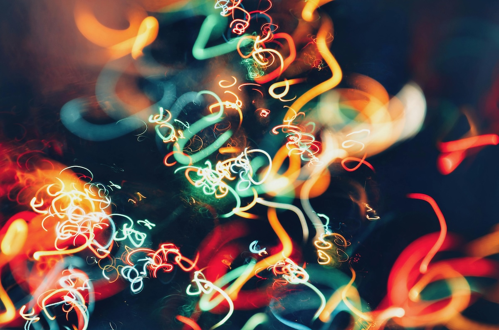

Işıkla Boyama: Fotoğraflarınıza Sanat Katın
Işıkla boyama, fotoğraflarınızı sıradanlıktan çıkarıp sanatsal bir şölen haline getirmenizi sağlayan etkileyici fotoğrafçılık tekniklerinden biridir. Adeta bir ressam gibi, fener veya diğer ışık kaynaklarını kullanarak “karanlık bir tuval” üzerine ışıkla desenler çizmek olarak tanımlanabilir. Bu yazıda, ışıkla boyama tekniğinin temel prensiplerini, farklı yaklaşımları ve dikkat edilmesi gereken noktaları detaylıca inceleyeceğiz.
Işıkla Boyama Nedir?
Işıkla boyama, uzun pozlama süresince hareket eden bir ışık kaynağı kullanarak şekiller, yazılar veya renkli dokular oluşturmayı kapsar. Bu teknik, genellikle karanlık veya az ışıklı alanlarda uygulanır ve ortaya çıkan sonuçlar soyut ve yaratıcı olabilir. Uygulamada, hem başlangıç seviyesindeki fotoğrafçılar hem de profesyoneller için sonsuz yaratıcılık olanakları sunar.
Hangi Ekipmanlara İhtiyacınız Var?
- Fotoğraf Makinesi: Manuel modda uzun pozlama yapabilen bir DSLR veya aynasız makine tercih edilir. Geniş dinamik aralığa sahip makineler daha iyi sonuçlar verir.
- Tripod: Makinenizin sabit kalması, net ve kaliteli çekimler için şarttır. Taşınabilir ve sağlam bir tripod tercih edin.
- Uzaktan Tetikleyici veya Zamanlayıcı: Titremeyi önlemek için kullanılabilir. Kablosuz tetikleyiciler bu işlemde pratiklik sağlar.
- Işık Kaynakları: Fenerler, LED ışıklar, renkli şelaleler veya hatta akıllı telefon ekranları bile yaratıcılığınızı konuşturmanıza yardımcı olabilir. İhtiyacınıza göre farklı ışık yoğunlukları ve renkleri deneyin.
- Karanlık Bir Ortam: Işıkla boyama tekniklerinin en iyi çalıştığı koşullar az ışık ya da tam karanlıkta elde edilir.
- Ekstra Malzemeler: Renkli jel filtreler, ışık çubukları veya metalik yüzeyler gibi malzemelerle farklı etkiler yaratabilirsiniz.
Nasıl Yapılır?
- Hazırlık:
- Fotoğraf makinenizi tripoda yerleştirin ve manuel moda alın.
- ISO değerini 100 veya 200 gibi düşük bir seviyeye ayarlayın. Bu, gürültüsüz bir görüntü elde etmenize yardımcı olur.
- Diyaframı f/8 veya f/11 gibi bir değere getirerek net alan derinliği sağlayın.
- Pozlama Ayarı:
- Pozlama süresini 10-30 saniye arasında bir değere ayarlayın. Daha uzun pozlama, daha fazla detay ekleme fırsatı verir. Bulb modunu kullanarak tam kontrol sağlayabilirsiniz.
- Kompozisyon:
- Sahneyi planlayın. Hangi şekilleri çizmek veya hangi alanları aydınlatmak istediğinize karar verin. Zemin ve arka plan unsurlarını temiz tutun.
- Işığı Kullanın:
- Işık kaynağını hareket ettirerek sahnenizi oluşturun. Bu sırada ışığın kameraya doğru tutulmamasına dikkat edin; aksi halde istenmeyen parlamalar oluşabilir.
- Farklı renk ve ışık hareketleriyle dinamizm yaratabilirsiniz.
Dikkat Edilmesi Gerekenler
- Deneme ve Hata: Her sahne ve ortam farklı sonuçlar verir. Ayarları ve hareketleri denedikçe en iyi sonucu bulabilirsiniz.
- Arka Planı Temiz Tutun: Gereksiz detaylardan uzak, sade bir arka plan tercih edin.
- Renkli Jel Filtreler: Fenerlerinizde renkli filtreler kullanarak fotoğraflarınıza farklı bir atmosfer katabilirsiniz.
- Doğru Zamanlama: Işık hareketlerinizi pozlama süresine uygun bir hızda yapmaya dikkat edin.
İlham Kaynakları
- Doğa:
- Ağaçları veya kayaları ışıkla çerçeveleyerek masalsı sahneler yaratabilirsiniz.
- Su birikintileri veya ıslak yüzeylerden yansıyan ışıkları deneyin.
- Soyut Desenler:
- Karmaşık çizgiler, spiraller veya geometrik şekiller oluşturarak soyut bir his verebilirsiniz.
- Dönüşen veya titreşen ışıklarla bambaşka etkiler elde edebilirsiniz.
- Portreler:
- Modelinizin çevresinde ışıkla şekiller oluşturarak portrelere dinamizm katabilirsiniz. İnce bir LED şeridi ile modelin etrafında yürüyen bir ışık etkisi yaratabilirsiniz.
Sonuç
Işıkla boyama, yaratıcılığınızı serbest bırakabileceğiniz bir alan sunar. Düzenli pratik yaparak ve farklı teknikler deneyerek kendinize özgü bir stil geliştirebilirsiniz. Hayal gücünüz kullanın ve bu etkileyici tekniği fotoğraflarınıza dahil ederek sanatınıza yeni bir boyut kazandırın…